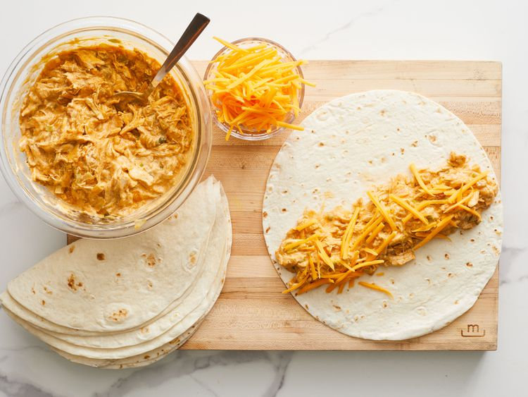

Enchiladas

Best enchiladas in Mexico
You can not live without try this dish from Mexico, one of most popular and recommended meal
Ingredients
- 2 pounds skinless, boneless chicken breast meat
- 1 1/4 cups sour cream
- 10.5 ounce can condensed cream of chicken soup
- 1/4 teaspoon chili powder
- 1 small onion, chopped
- 1 cup water
- 1 bunch green onions, chopped, divided
- 4 ounce can chopped green chiles, drained
- 1.25 ounce package mild taco seasoning mix
- 1 teaspoon lime juice
- 1/2 teaspoon onion powder
- 1/2 teaspoon garlic powder
- 12 inch flour tortillas
- 3 cups shredded cheddar cheese
- 10 ounce can enchilada sauce
- 6 ounce can slice black olives, drained
Prepare Enchiladas
- Place chicken into a large pot and add water to cover. Bring to a boil over high heat, then reduce the heat to medium-low, cover, and simmer until chicken is no longer pink and the juices run clear, about 10 minutes.
- Remove from the pot and let sit until cool enough to handle, 5 to 10 minutes. Shred chicken with two forks
- Combine sour cream, condensed soup, and chili powder in a saucepan. Bring to a simmer, stirring occasionally, then turn off the heat and cover to keep warm
- At the same time, melt butter in a skillet over medium heat. Add onion; cook and stir until translucent, about 5 minutes. Add shredded chicken, water, 1/2 of the green onions, green chiles, and taco seasoning; simmer for 10 minutes. Stir in lime juice, onion powder, and garlic powder; simmer for 10 more minutes
- Preheat the oven to 350 degrees F (175 degrees C)
- Stir 1 cup soup mixture into the skillet with the chicken. Spread remaining soup mixture over the bottom of a 9x13-inch baking dish
- Fill each tortilla with 1/5 of the chicken mixture and about 5 tablespoons Cheddar cheese
- Roll tortillas around filling and place enchiladas, seam-side down, into the baking dish. Pour enchilada sauce over top and sprinkle with remaining Cheddar, remaining green onions, and olives.
- Bake in the preheated oven until filling is heated through and cheese is melted and bubbling, about 25 minutes
Time to eat!!!
What are you waiting for, just eat.